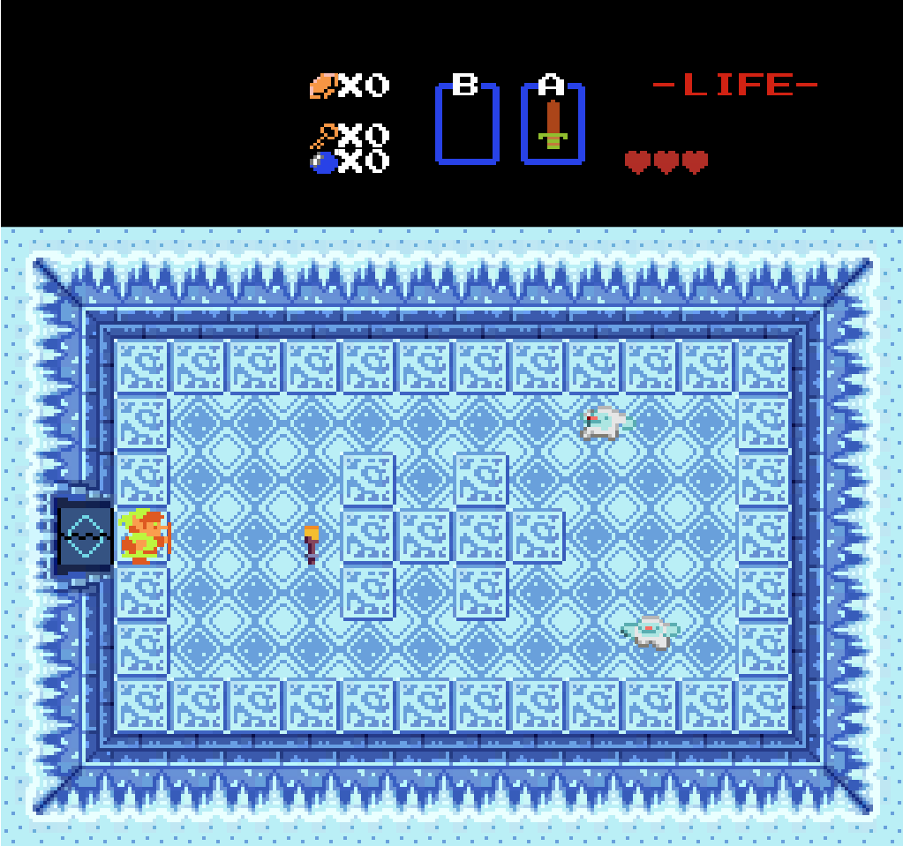
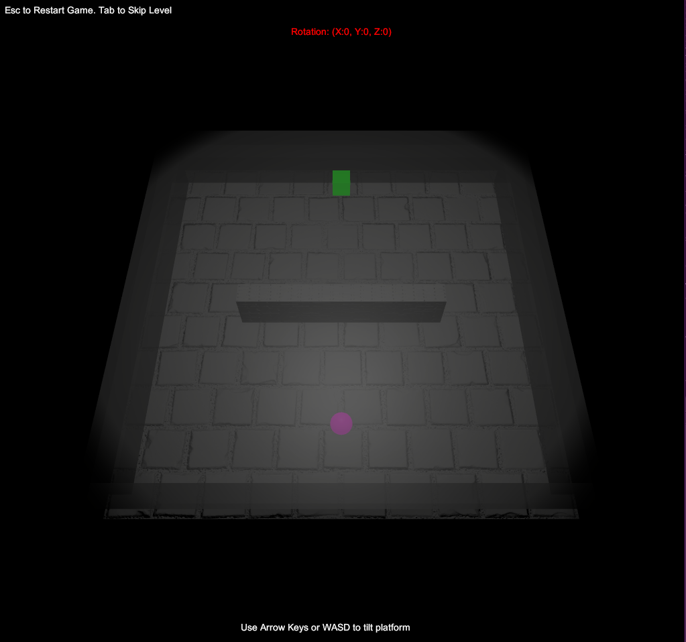

The Legend of Zelda (Unity Remaster). Created by Nicholas Roberson and Mahdi Qazwini for EECS 494.
Builds Mac Build Windows Build Web Build
Contributions: This recreation of the first dungeon of the Legend of Zelda NES was built largely though the collaboration of Nicholas Roberson and Mahdi Qazwini. My main focus on this project was Grid-Based Movement of the player. In addition, I also designed the level for our additional feature.
Technology Used
- Unity: Unity 2021.3.16f1
- C#
TiltABall. Created by Nicholas Roberson for EECS 494.
Builds Web Build
Contributions: This project was created by Nicholas Roberson
Technology Used
- Unity: Unity 2021.3.16f1
- C#
Just Jump. Created by Blue Moons for EECS 494 project 3.

Builds Web Build
Contributions: This project was created by Austin Wang: Worked on the UI, along with the scoring and leaderboard system. Emmanuel Chiejina: My main focus was designing the player's movement as well as some of the levels & game mechanics. Jacob Draksler: Mainly worked on visuals and death/respawn mechanics. Nicholas Roberson: Worked primarily on level design, game audio, and player guidance. Tan Yao: Worked on game aesthetics and ghost replay system.
Technology Used
- Unity: Unity 2021.3.16f1
- C#